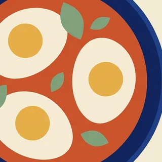
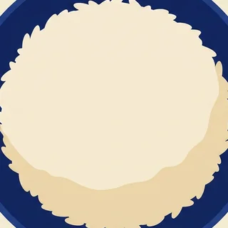

מבנה קבוע של חמישה תאים, ורק המילוי משתנה. איור אחד לכל רכיב מרכיב כל צירוף אפשרי — במקום תמונה לכל מנה. התמונות כאן הן חיתוכים זמניים משתי המנות שכבר יוצרו, רק כדי להראות את הרעיון.
המקרה הרגיל. כל תא מתמלא ברגע שבוחרים רכיב בתפקיד שלו.


היום · ערב
סלמון בתנור
עם פירה, סלט ישראלי וטחינה
35 דק׳ · בינוני
main)שקשוקה או פיצה הן ארוחה בפני עצמן. התא הגדול מתרחב, והתאים הקטנים נשארים מקווקווים — פתוחים למי שכן רוצה להוסיף.
היום · ערב
שקשוקה
עם פיתה חמה
25 דק׳ · קל
המגש הריק הוא ההזמנה לפעולה. אותה צורה מקווקוות של יום לא מתוכנן בפס השבוע.
היום · ערב
עוד לא תוכנן
בחר מנה, והרשימה תתעדכן לבד.